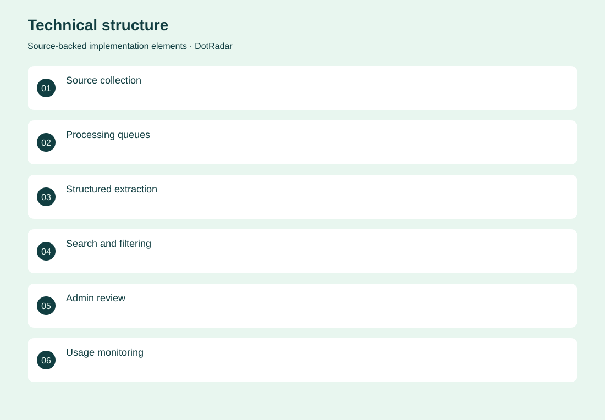
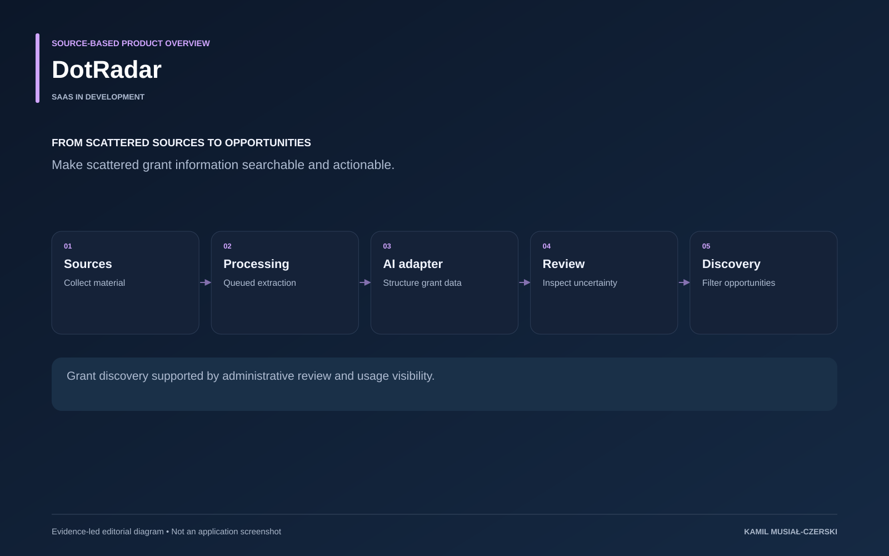

The project
Collection, extraction and presentation are separate stages. Processing queues organize incoming source material; model adapters turn free text into structured opportunity data; administrative screens expose review and processing costs. The product brings grants into a consistent discovery workflow while keeping uncertain data visible for review.
The problem
Funding opportunities are fragmented across sources and difficult to monitor consistently.
The solution
A collection and processing pipeline normalizes opportunities, while filtering and administrative review support discovery.
My contribution
Implemented source-processing workflows, structured grant extraction, administrative review and usage visibility.
AI capabilities
Grant information extraction; Provider-selectable LLM processing; Embeddings
Technical structure

Product overview

The portfolio cover is an editorial illustration. No live product screenshot is presented for this project.
Showcase assets
{kind=link}
{kind=link}
{kind=link}
New portfolio identity. Newly designed marks are portfolio treatments, not claims of official client branding.